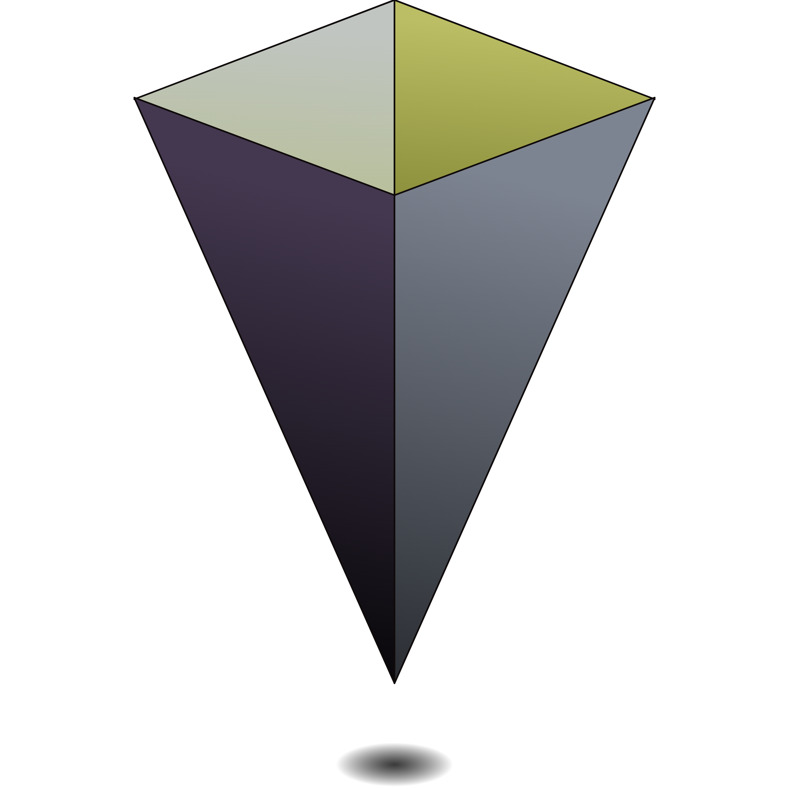

<nav class="navbar px-4 fixed z-40 top-0 bg-base-100">
  <div class="navbar-start">
    <label for="filters-drawer" class="btn btn-ghost btn-square drawer-button md:hidden"><ion-icon name="menu-outline"
        class="w-8 h-8"></ion-icon></label>
    
    <p class="font-medium text-2xl">
      <span class="text-primary">N</span>
      <span class="text-secondary">a</span>
      <span class="text-accent">b</span>
      <span class="text-neutral">u</span>
    </p>
  </div>
  <div class="flex-none navbar-end">
    <div class="dropdown dropdown-end">
      <div tabindex="0" class="btn btn-ghost btn-square avatar">
        <ion-icon name="person-circle-outline" class="w-8 h-8" />
      </div>
      <ul tabindex="-1" class="menu dropdown-content mt-2 p-2 bg-base-100 rounded-md w-48 shadow z-50">
        <li>
          <button type="button" (click)='signOut()'>
            Sign Out
          </button>
        </li>
      </ul>
    </div>
  </div>
</nav>